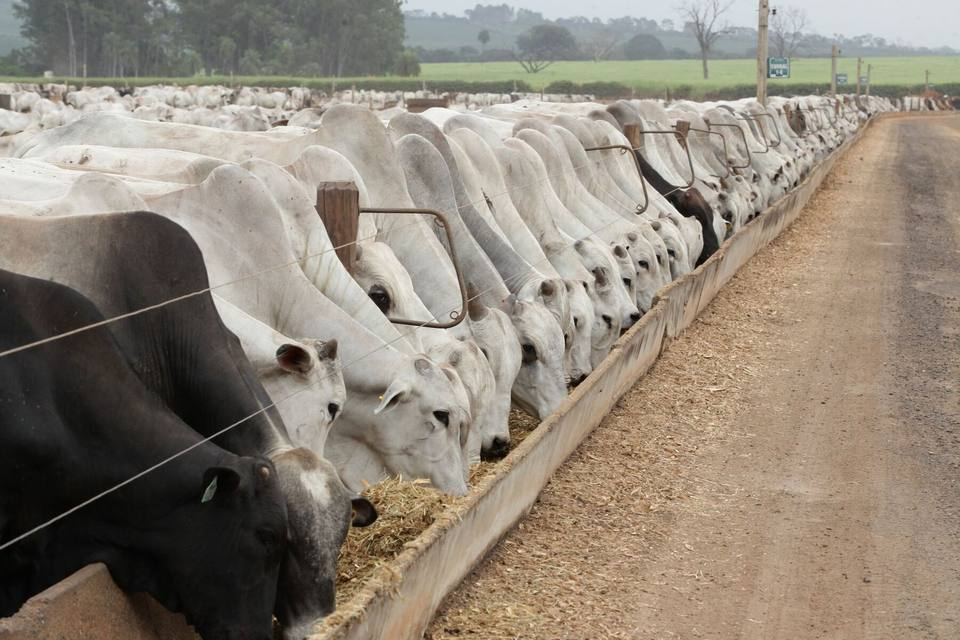

Cotações.
Esta página reúne o Indicador do Boi Gordo CEPEA/ESALQ e as cotações dos contratos futuros de Boi Gordo negociados na B3, utilizados como referências para contratos, planejamento e gestão de risco.
Boi Gordo · Indicador CEPEA/ESALQ
Atualização diáriaFonte: CEPEA/ESALQ · dados exibidos pelo widget oficial do Cepea, atualizado pela própria instituição.
Mercado futuro · Boi Gordo (BGI) na B3
Por vencimentoCotações por TradingView · dados da B3, com atraso em relação ao pregão
Fonte: B3 · cotações distribuídas pela TradingView, distribuidora licenciada de market data.
Indicadores utilizados.
Os contratos de parceria da CMA são referenciados em indicadores públicos, como os do CEPEA e da B3, de modo que empresa e pecuarista acompanhem a mesma base de cálculo ao longo de todo o ciclo.
Aqui, termos técnicos são explicados na primeira vez que aparecem: @ é a arroba (15 kg de carcaça), GMD é o ganho médio diário, e trava é a proteção de preço feita no mercado futuro.
Seu gado no confinamento pioneiro em certificação do Brasil.
Modelos de parceria que se adaptam à sua estratégia, possibilidade de travar o preço na B3 e o relatório do seu lote em uma página. Simule sua parceria.